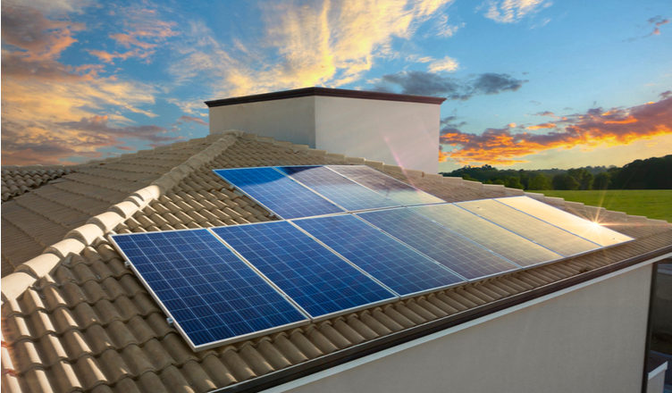
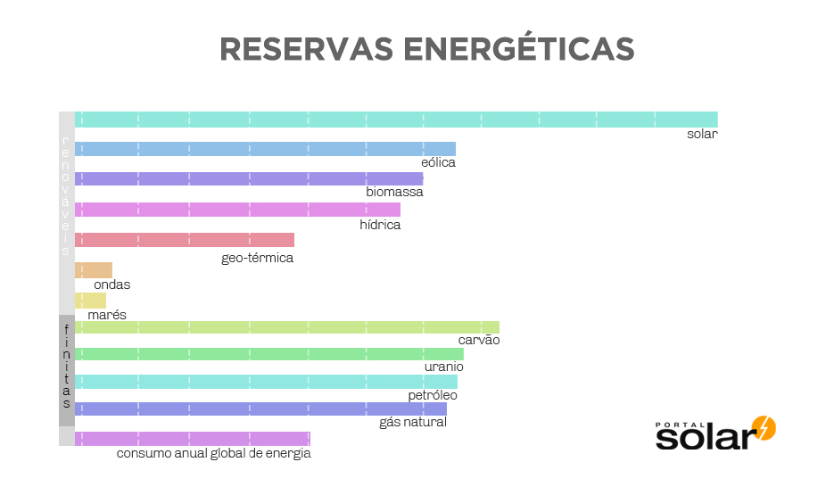

A energia solar é uma energia alternativa, renovável e sustentável, que funciona utilizando o sol como fonte de energia e pode ser aproveitada e utilizada por diferentes tecnologias, como: aquecimento solar, energia solar fotovoltaica e energia heliotérmica.
O conceito de Energia Solar é associado à energia fotovoltaica, que é a geração de energia elétrica usando a luz do sol como fonte de energia. Após a luz do sol ser captada por painéis solares, ocorre a transformação da corrente elétrica para utilização em residências, comércios e indústrias.
A energia solar serve para diversas funções, pois utiliza o sol como fonte de energia, portanto é uma forma limpa e sem danos à natureza de se gerar energia elétrica com um grande aproveitamento, sendo o calor e a luz solar como umas das fontes mais aproveitáveis e promissoras energias no mundo.
O sol pode funcionar como fonte de energia para geração de energia elétrica por meio da energia fotovoltaica; no aquecimento de líquidos com a energia solar térmica; e em usinas solares de grande porte.
A energia fotovoltaica utiliza placas solares para captar a luz do sol, gerando eletricidade, enquanto a energia solar térmica utiliza o sol como fonte de energia para aquecer líquidos.
A energia do sol é considerada como inesgotável do ponto de vista humano. O potencial da energia solar é excepcional em comparação com todas as outras fontes de energia.
Veja abaixo o potencial da energia solar em comparação com as outras fontes de energia. Nessa imagem, vemos o potencial anual das energias finitas e das energias alternativas, que são consideradas renováveis.
As alternativas de como a energia solar pode ser aproveitada são: quando utilizada de modo fotovoltaico ou térmico, gerando energia elétrica e térmica, respectivamente. Assim, é possível aproveitá-la por meio da economia da conta de luz ou redução do uso de aparelhos elétricos. Desta forma, você evita desperdício e ajuda o meio ambiente.
A energia solar pode ser aproveitada ao máximo com uma boa alocação e manutenção do sistema que capta a energia, em áreas mais altas da propriedade onde há maior incidência de raios solares.
Saber como a energia solar pode ser aproveitada em todo seu potencial pode evitar grandes desperdícios, bem como garantir uma maior durabilidade para todo o sistema!
Existem inúmeras formas de aproveitarmos a energia solar, permitindo utilizá-las para o desenvolvimento do nosso país. Assim, é possível explorar sua matriz energética de maneira sustentável, renovável e econômica para:
Essas práticas são encontradas majoritariamente nas regiões Sul e Sudeste do Brasil, por efeito de suas características climáticas, e em segundo lugar nas regiões Norte e Nordeste, em comunidades isoladas de distribuidoras de energia elétrica.
Além disso, é válido destacar que, embora nosso país possua um grande nível de insolação para a distribuição de energia solar, também possuímos regiões com menores índices. Entretanto, também é possível explorar o potencial energético nessas áreas, basta alcançarmos os incentivos necessários.
Existem as mais variadas formas de aproveitar a energia solar como uma fonte de energia renovável. As principais tecnologias utilizadas são Energia Solar Fotovoltaica, Energia Solar Térmica e Energia Heliotérmica.